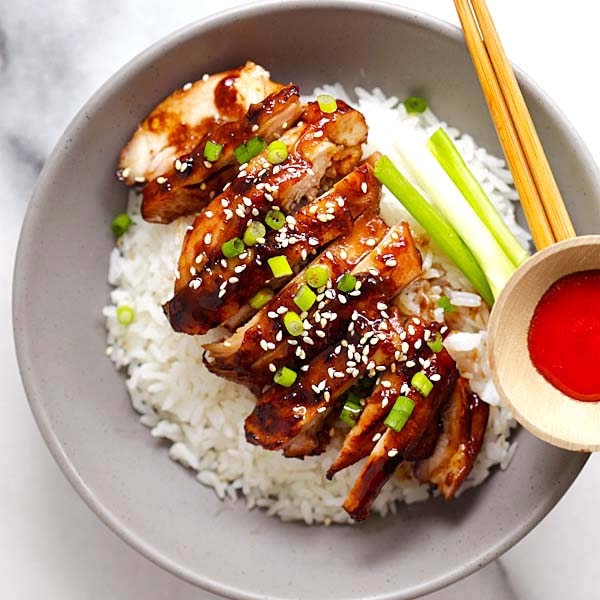

Soy glazed air fryer chicken and rice

The best soy-glazed chicken recipe ever. Made with soy sauce, five spice powder and sugar, this sticky and savory chicken is crazy good!
When it comes to Asian-style chicken, you really just need a few ingredients: a good soy sauce, five spice powder, cooking wine, sesame oil and sugar and you will have an amazing and extremely flavorful chicken dish.
Slow cook the chicken on low heat so it’s soft and tender. Let the sauce slowly simmer and reduces to a savory, sweet, and sticky good consistency. Serve the chicken over steamed rice and you will have the most amazing Asian chicken bowl ever that everyone will be happy to gobble up.
I recommend chicken thighs (remove the bones) but chicken breasts and chicken legs will work well, too. Just remember to make extra steamed rice to go with this soy-glazed chicken. Enjoy!
Ingredients:
- 1 1/2 lbs. 4 chicken thighs
- 2 1/2 tablespoons soy sauce
- 1 teaspoon five-spice powder
- 1 tablespoon Chinese rice wine or Japanese cooking sake
- 1 teaspoon seasame oil
- 2 tablespoons sugar
- 1 1/2 tablespoons oil
- 2 cloves garlic, minced
- white seasame
- chopped scallion
Steps:
- Debone the chicken thighs following the instructions here. Mix the soy sauce, five spice powder, wine, sesame oil and sugar together. Whisk to dissolve sugar completely. Add the sauce mixture to the chicken. Stir to coat well.
- Heat up a skillet on low to medium heat and add the oil. When the oil is heated, add the garlic and saute until they turn light brown. Add the chicken and all the sauce into the skillet and cook slowly, for about 8 to 10 minutes, or until the chicken is cooked through and the sauce reduces.
- Remove the chicken from the skillet, garnish with white sesame and scallion, serve hot with steamed rice.
Notes:
You may use boneless and skinless chicken thighs, chicken breasts, or chicken drumsticks. I used low sodium soy sauce. If your sauce mixture is too salty, add some water to dilute or more sugar to taste.